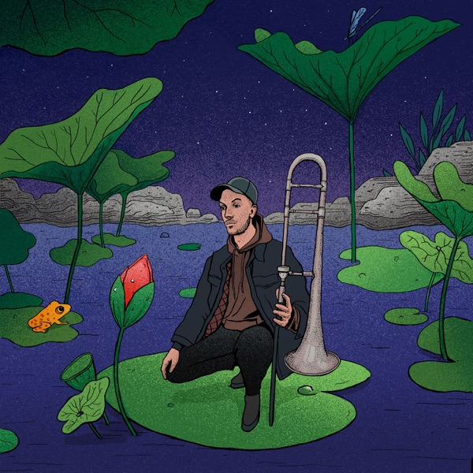
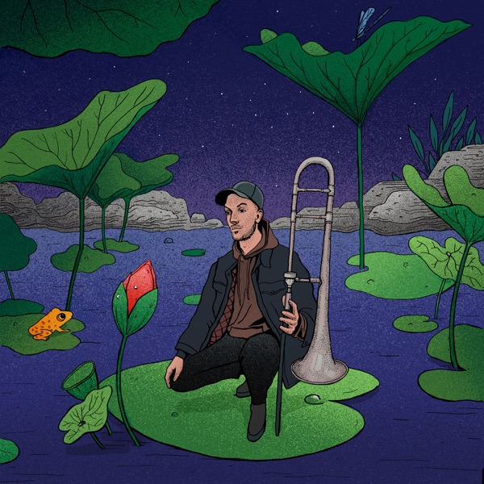

Day 117

Nine Sparks Riots ◆ Try Not To Worry ◆ The Lotus and the Swamp ◆ 2022
这是有一段时间之前发现的曲子。当时是个晚上，我睡不太着，就把 Spotify 放枕头边，放点音乐听听。突然间这首曲子放出来，用它柔软舒适的温暖空气把我抱在怀里，我瞬间沉醉了，太美了。之后听了这张专辑，发现这首曲子应该只是专辑的 outro，但是这首比其他所有歌都更让我喜欢。

Nine Sparks Riots ◆ Try Not To Worry ◆ The Lotus and the Swamp ◆ 2022
这是有一段时间之前发现的曲子。当时是个晚上，我睡不太着，就把 Spotify 放枕头边，放点音乐听听。突然间这首曲子放出来，用它柔软舒适的温暖空气把我抱在怀里，我瞬间沉醉了，太美了。之后听了这张专辑，发现这首曲子应该只是专辑的 outro，但是这首比其他所有歌都更让我喜欢。